Five content formats, all feeding one mechanic that turns views into named pubs you can sell kegs to.
Love Beer is being judged as a beer brand that makes content. Every video gets measured on whether it shifted stock that week. That is a fight content will always lose, and it is why the last hire did not work: the output was shaped like one-off projects instead of a system, so there was a dry week every time something slipped.
Meanwhile the subject sitting directly underneath your business is the one nobody is covering.
161 pubs closed across England, Scotland and Wales in the first quarter of 2026. Close to two a day, and 26% up on the same period in 2025.
British Beer and Pub Association, via The Morning Advertiser, May 2026Everyone is making content about beer. Nobody is making content about the pub.
Love Beer becomes the media brand of the British pub. The subject is the pub itself: its games, its characters, its rituals and its decline. Beer is the setting, not the sell. One editorial test decides every idea: would this still be interesting if nobody was drinking? If yes, make it.
A pub brand talks to drinkers and to landlords in the same breath. The landlord half is where your trade revenue sits.
Pub subject matter keeps working. A trend format dies with the trend; this gets more valuable every year it exists.
No channel owns the British pub. Too unglamorous for a broadcaster to commission, too specific for a brewery to think of.
One mechanic sits under all five formats, so they stop being five ideas and start being a system. Every piece ends the same way: nominate your local. Not “comment below”, but a specific ask for a specific pub, a town and a reason.
Same end card and pinned comment on every post. Pub name, town, one line on why.
Nominations become a public map that grows weekly. The map growing is itself content.
We film the shortlist. The pub promotes the episode to its own regulars, because it is about them.
What it is worth commercially: a nominated pub is a warm inbound for the trade side. The landlord has already been told by their own customers that Love Beer is coming. That is a very different first call from a cold one. The number to report monthly is filmed pubs converted to trade accounts.
Rather than inventing demand, we take formats that have already proved people watch them and rebuild them so the output sells kegs. Each one below exists already. The right hand column is the Love Beer version.
| What already works | The Love Beer rework | Why it sells |
|---|---|---|
| “Five pumps”: asking drinkers which five beers they would put on in their own pub. One creator’s version drew thousands of comments. | Price My Five Pumps. They name the lineup, we price the kegs and show what it costs to actually stock it, delivered. | Turns a comment thread into a product demonstration. Every answer is a quote request you did not have to ask for. |
| Street interview formats built on one repeated question and fast cuts. | Pub Or Not. One question at the door of a venue: is this still a pub? Regulars argue it out. | Cheap to shoot, endlessly repeatable, and it maps the exact venues your trade team wants named. |
| Blind taste tests: a staple of drinks content, usually run once as a one off novelty. | The Blind Pour. Format two above, run as a standing series with a triangle test and a record that carries between episodes. | The only format that demonstrates keg over can, a clean line and a home draught system without pitching any of them. |
| Price comparison content: the same item, different places, real numbers. | What A Pint Costs Here. Same pint, five towns, the landlord explains their margin on camera. | Puts your trade pricing in the conversation without pitching it. Landlords share it themselves. |
| Skill and precision challenges, judged strictly, with a running leaderboard. | Split the G Championship. Format one above, as the recurring weekly spine. | The simplest format to produce and the one with the most proven appetite. |
| Record attempts and extreme logistics: carrying something ordinary somewhere it has no business being. | The Highest Pub In Britain. Format five above. A working draught bar at 1,085 metres, more than double the current record. | The delivery promise made undeniable. If it works on a mountain top, nobody questions whether it works in a town centre. |
| Access documentary: hand a business to an outsider and film what breaks. | The AI Landlord. Format three above, as the annual flagship. | The press piece. It puts Love Beer in trade, national and tech coverage at once. |
A shoot day is planned as a harvest, not as a shoot. That is the difference between a full calendar and a dry week. One pub visit produces:
The commitment: a posting calendar published four weeks ahead, visible to you, every slot filled before the month starts. The metric we report on is missed slots, not views. Views are a result. Slots are a promise.
Pick a format and we will get the first shoot day in the diary. The championship can be filming inside a fortnight.